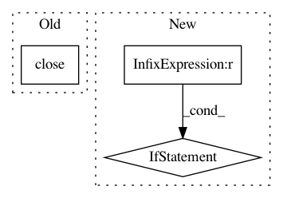

62a694dbe985bb9e9007d6bf4cb21d6776a985ef,examples/advanced/spectrum.py,,get_audio_data,#,92
Before Change
stream = pa.open(format=pyaudio.paInt16, channels=1, rate=SAMPLING_RATE,
input=True, frames_per_buffer=NUM_SAMPLES)
audio_data = fromstring(stream.read(NUM_SAMPLES), dtype=short)
stream.close()
normalized_data = audio_data / 32768.0
return (abs(fft(normalized_data))[:NUM_SAMPLES/2], normalized_data)
After Change
_stream = None
def get_audio_data():
global _stream
if _stream is None:
pa = pyaudio.PyAudio()
_stream = pa.open(format=pyaudio.paInt16, channels=1, rate=SAMPLING_RATE,
input=True, frames_per_buffer=NUM_SAMPLES)
audio_data = fromstring(_stream.read(NUM_SAMPLES), dtype=short)
normalized_data = audio_data / 32768.0
return (abs(fft(normalized_data))[:NUM_SAMPLES/2], normalized_data)
In pattern: SUPERPATTERN
Frequency: 5
Non-data size: 3
Instances
Project Name: enthought/chaco
Commit Name: 62a694dbe985bb9e9007d6bf4cb21d6776a985ef
Time: 2010-05-12
Author: dpinte@651a555e-23ca-0310-84fe-ca9f7c59d2ea
File Name: examples/advanced/spectrum.py
Class Name:
Method Name: get_audio_data
Project Name: THUNLP-MT/THUMT
Commit Name: 6880ee0c2c46573cfc77444e2970aa8695140076
Time: 2019-02-14
Author: playinf@stu.xmu.edu.cn
File Name: thumt/scripts/shuffle_corpus.py
Class Name:
Method Name: main
Project Name: eriklindernoren/PyTorch-YOLOv3
Commit Name: 757ec7a9c823273004e2e9a265d3e3cd22c908b3
Time: 2019-04-30
Author: eriklindernoren@live.se
File Name: models.py
Class Name: Darknet
Method Name: load_darknet_weights
Project Name: enthought/chaco
Commit Name: 20bb11b266c6f5c1d528dbeca85b6c122d5c42e9
Time: 2009-05-02
Author: ischnell@651a555e-23ca-0310-84fe-ca9f7c59d2ea
File Name: examples/advanced/spectrum.py
Class Name:
Method Name: get_audio_data
Project Name: DenisTome/Lifting-from-the-Deep-release
Commit Name: 70f229dde624412adb0bc466b4eee4929fcc1d91
Time: 2017-07-13
Author: dario.turchi@ocado.com
File Name: demo.py
Class Name:
Method Name: